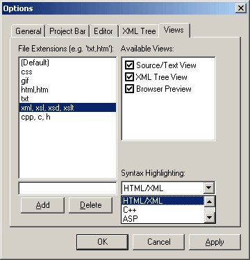

The Views/Parsers Dialog allows you to configure how to handle the syntax highlighting and what views to use for each type of file that you deal with. Click below on an area of the screenshot to see the description of that portion of the dialog.

Click on an item to see more information.